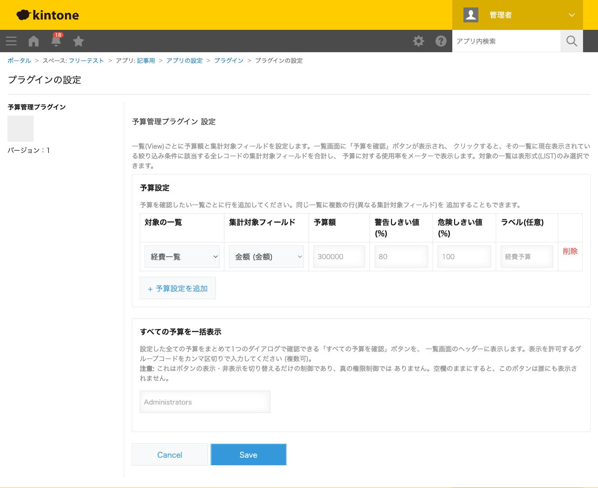
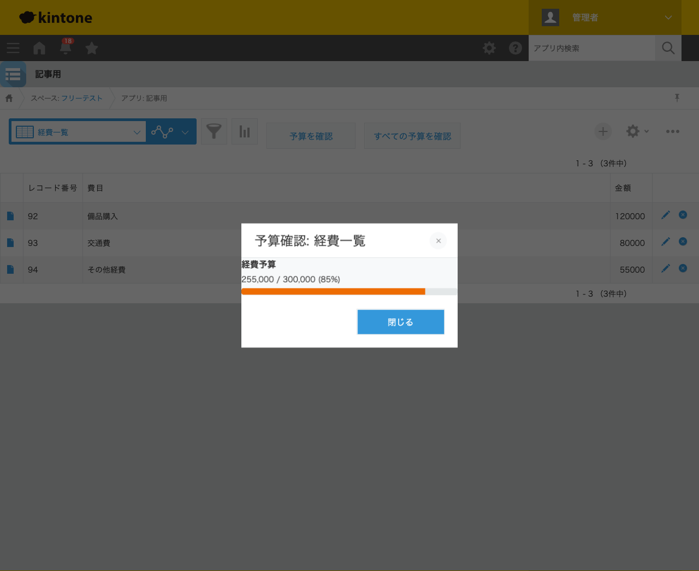

GovAppsプラグイン 安全性を確認できる無料kintoneプラグイン集
経費申請や案件ごとの支出をkintoneで管理していると、「今、予算に対してどれくらい使っているか」を 都度自分で電卓を叩いて確認するのは面倒です。この記事では、無料プラグインで一覧の合計額を予算と 比べてメーター表示し、しきい値を超えたら色で警告する方法を、実際の設定画面と表示結果つきで 解説します。
kintoneの標準機能には、一覧のレコード件数・数値フィールドの合計を表示する集計機能や、グラフ機能が あります。ただし「合計額を固定の予算額と比較して、しきい値で色分けする」という表示は標準にはなく、 グラフを開いて手動で予算額と見比べる運用になりがちです。JavaScriptカスタマイズを自作すれば実現 できますが、一覧の絞り込み条件を取得して集計し、しきい値判定・色分け・ダイアログ表示までを組む のは簡単な作業ではありません。
「一覧の合計額を予算と比較してメーター表示する」機能を用意する方法は、大きく4つあります。 それぞれの向き不向きをまとめました。
| 方法 | 向いている場合 | 注意点 |
|---|---|---|
| kintone標準のグラフ機能のみ | 予算額との比較を都度自分で見比べても構わない場合 | しきい値による色分け・警告表示はできない |
| JavaScriptを自作する | 社内に開発者がいて、独自の集計・表示要件が多い場合 | 絞り込み条件の取得・集計・しきい値判定の実装・保守が必要 |
| 有料の他社プラグイン | 予算があり、高機能なダッシュボードを求める場合 | 月額課金が発生する。ソースコードが非公開で、外部通信の有無を利用者側で確認しにくいことが多い |
| GovAppsプラグイン(このプラグイン) | 無料で試したい、社内・庁内でセキュリティを確認してから導入したい場合 | 集計は合計(SUM)のみ対応(件数・平均はスコープ外) |
GovAppsのプラグインはすべて無料・広告なしで、追加課金なしで使い続けられます。 ソースコードはGitHubで全公開しているオープンソースなので、 「本当に外部と通信していないか」「集計方法」を自治体・企業のセキュリティ担当者自身の目で 確認できます(このプラグインも個別ページにセキュリティレビュー結果を掲載しています)。
予算管理プラグインは、対象の一覧・集計対象フィールド・予算額を 設定するだけで、一覧画面に「予算を確認」ボタンを追加します。今回は「経費一覧」という一覧 (費目・金額のフィールドを持つアプリ)で設定しました。

「経費一覧」を開いて「予算を確認」ボタンを押すと、その一覧の現在の絞り込み条件に該当する 全レコードの金額を合計し、予算に対する使用率をメーターで表示するダイアログが開きます。 今回は備品購入12万円・交通費8万円・その他経費5.5万円の合計25.5万円で、予算30万円の 85%に達したため、警告しきい値(80%)を超えてメーターがオレンジ色に変わりました。

一覧画面でさらに絞り込み条件を追加・変更してから「予算を確認」を押すと、その時点で画面に 表示されている条件のレコードだけを対象に再集計されます。色だけでなく「255,000 / 300,000 (85%)」という数値も必ず併記されるため、色覚に依存せず状況を把握できます。
GET /k/v1/records.json)を使い、対象一覧の現在の絞り込み条件(kintone.app.getQueryCondition())に該当する全レコードをページングして取得します。書き込みは一切行いません。